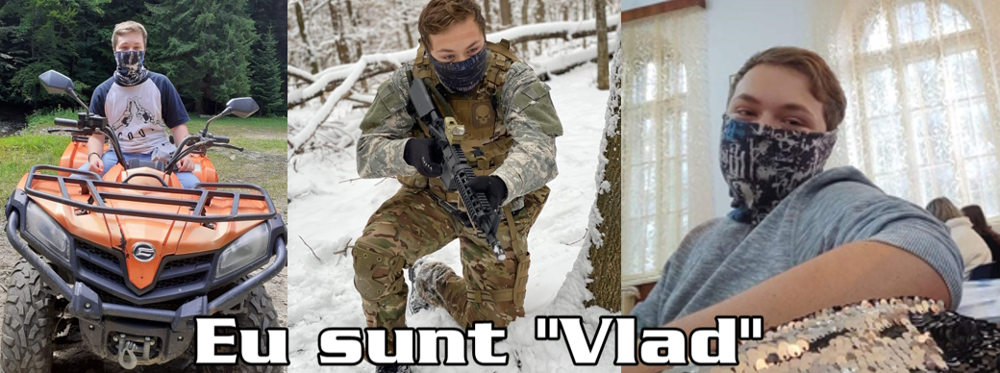
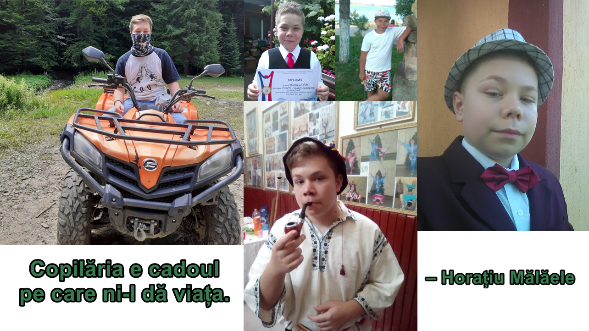
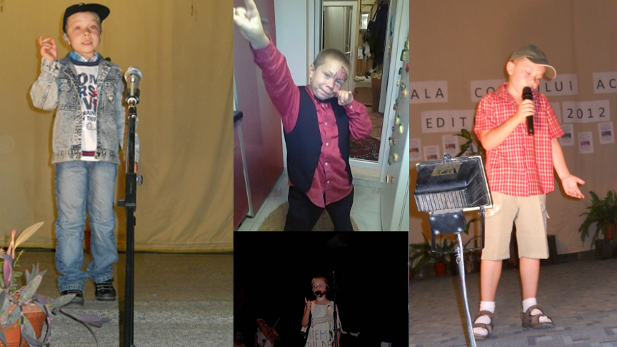
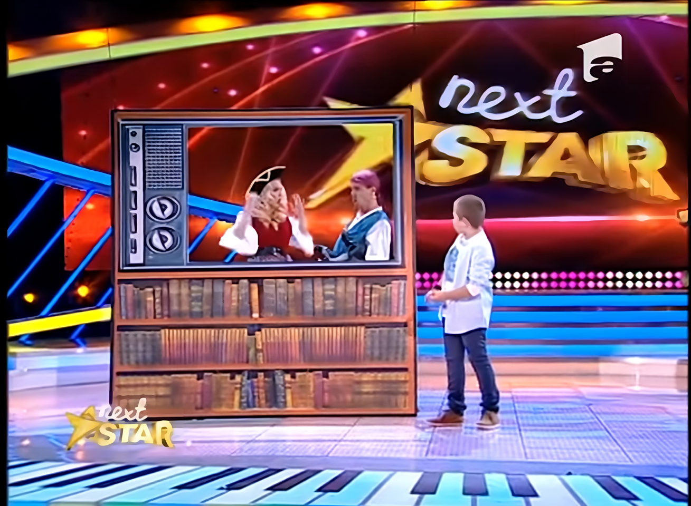
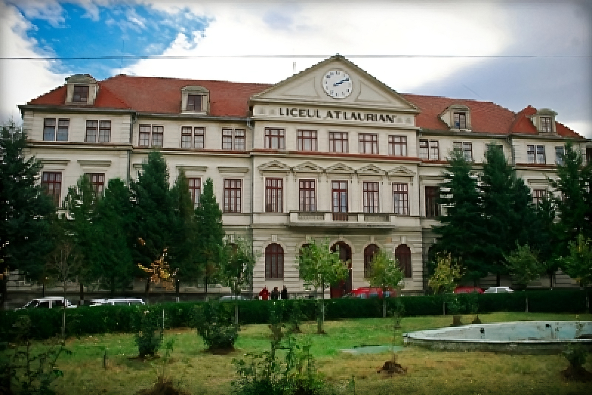

Cine sunt eu?
Numele meu este Timofti Vlăduț-Constantin, sunt născut în data de 30 aprilie 2004 în Botoșani. Majoritatea oamenilor îmi spun "Vlad", deoarece nu foarte multă lume crede la început că numele din buletin este chiar "Vlăduț".
Încă de mic am fost foarte activ, lucru care s-a schimbat într-o oarecare măsură când am crescut, însă întotdeauna am fost creativ, începând prin a căuta tot felul de construcții din ©Lego, blocuri de construit pentru copii, însă eu nu mă opream aici, ci mereu îmi găseam câte ceva cu care să încerc să fac lucruri noi, ca orice copil. Am început cu bețe și îmi imaginam că sunt tot felul de instrumente, după cu pietre pe care le loveam una de cealaltă în speranța de a face foc.
Începutul Vieții
Grădinița
Când a venit vorba de grădiniță, nu am fost neapărat cel mai încântat să merg, pentru că fiind copil, eram obișnuit să stau acasă cu părinții și bunicii, însă începutul grădiniței este primul pas pentru a începe cu adevărat viața. Acolo am învățat lucruri de baza, începând cu culori, continuând cu câteva obiecte în limba engleză. Tot în grădiniță am participat la diverse concursuri, care mai târziu aveau să își facă simțită prezența.
De asemenea, în perioada grădiniței am descoperit și pasiunea pentru actorie, pe care am reușit să o dezvolt și să o modelez în cadrul Palatului Copiilor Botoșani sub îndrumarea domnului profesor Alexandru Mihalachi, căruia îi port un respect enorm și în ziua de astăzi.
Datorită dumnealui am reușit să mă dezvolt lingvistic, participând la tot felul de concursuri. Am petrecut 8 ani alături de domnul profesor și de colegii de acolo, care mi-au devenit familie mai repede decât mă așteptam. Cu ei am mers în orașe și județe noi, am explorat o parte frumoasă a țării, fiind de multe ori în Alba Iulia, Bușteni, Sighișoara și multe alte orașe în care ne prezentam spectacolul la care lucram timp de un an. Am legat prietenii frumoase, am avut parte de experiențe de neuitat precum parcurgerea unui teren minat și vizita la o unitate militară, tir cu arcul, lucruri pe care le-aș fi regretat surprinzător de mult dacă nu reușeam să le fac. Pot spune că decizia de a rămâne la Palatul Copiilor și de a parcurge această viață de "mini-actor" a fost una dintre cele mai bune decizii din viața mea, deoarece anii petrecuți acolo m-au învățat să fiu un om deschis, m-au scutit de frica de a vorbi liber în fața unui public și a contribut la formarea mea ca și persoană.
Școala primară și gimnaziul
Perioada gimnaziului și școlii primare a fost, de asemenea, una din cele mai importante din viața mea, deoarece în cei 4 ani de gimnaziu și școală primară am pus bazele scrierii, citirii, calculelor, am reușit să îmi fac prieteni noi, m-am bucurat de perioada școlii simple, dar cel mai important, am făcut un pas mare în viața mea.
 Sunt mândru de faptul că am
reușit să îmi iau inima în dinți, iar în clasa a III-a am participat la concursul televizat "Next
Star". Intenția de a merge a fost una rapidă, puțin pregătită, deoarece am văzut anunțul de
preselecții la televizor, iar ziua următoare eram în mașină cu tatăl meu, în drum spre Palatul
Copiilor din Iași pentru a da proba de preselecție. Momentul meu a fost relativ scurt la acea probă;
am fost cu o fabulă în stilul poetului La Fontaine, pe care am învățat-o datorită domnului profesor
Mihalachi. După ce am prezentat momentul, mi s-a spus că voi fi contactat în cazul în care voi trece
la etapa următoare. Repede înainte, în vara aceluiași an, am primit un apel în care mi se comunicase
faptul că eu am reușit să ajung la etapa următoare, și anume etapa televizată, și că voi fi nevoit
să merg alături de părinți in București, timp de 10 zile in care vom pregăti momentul.
Sunt mândru de faptul că am
reușit să îmi iau inima în dinți, iar în clasa a III-a am participat la concursul televizat "Next
Star". Intenția de a merge a fost una rapidă, puțin pregătită, deoarece am văzut anunțul de
preselecții la televizor, iar ziua următoare eram în mașină cu tatăl meu, în drum spre Palatul
Copiilor din Iași pentru a da proba de preselecție. Momentul meu a fost relativ scurt la acea probă;
am fost cu o fabulă în stilul poetului La Fontaine, pe care am învățat-o datorită domnului profesor
Mihalachi. După ce am prezentat momentul, mi s-a spus că voi fi contactat în cazul în care voi trece
la etapa următoare. Repede înainte, în vara aceluiași an, am primit un apel în care mi se comunicase
faptul că eu am reușit să ajung la etapa următoare, și anume etapa televizată, și că voi fi nevoit
să merg alături de părinți in București, timp de 10 zile in care vom pregăti momentul.
Pentru a viziona momentul va invit pe acest link.
De menționat este și ziua în care s-a filmat prezentarea mea, când a venit o echipă de filmări și am petrecut toată ziua pentru a prinde cele mai bune cadre. De asemenea am dat și un interviu, primul chiar din viața mea, unde mi-am prezentat colecția mult îndrăgită de machete de mașini de epocă, alături de unele seturi ©Lego. Pentru a avea cele mai reprezentative cadre, m-am îmbrăcat în ia populară, mama a făcut un colac moldovenesc și așa am început totul. Am reușit să prindem și câteva cadre de la pescuit, unde pentru a ne asigura că totul arată bine am luat un pește gata prins și l-am pus în cârlig, și așa am reușit să devin mândria școlii mele.
Toată această perioadă mi-a oferit o altă viziune asupra lumii, mi-a arătat cât de departe pot ajunge dacă îmi urmez această pasiune, mi-a arătat că pot cunoaște persoane minunate pe parcursul vieții, însă asta urma să se schimbe o dată cu creșterea în vârstă. Pot spune cu mândrie că în perioada în care am activat la Palatul Copiilor am învățat cu adevărat că munca multă se răsplătește. Sentimentul pe care îl aveam în momentele în care prezentam spectacolul la care am lucrat enorm de mult este unul minunat, faptul că vedeam publicul râzând la glumele noastre, aplauzele pe care le primeam și premiile de la final făceau ca toate orele lucrate să fie meritate. Așa am învățat că pentru a ajunge departe nu pot să stau degeaba, ci trebuie să trag de mine, să trag de echipa în care sunt până în punctul în care totul este exact cum ar trebui să fie.
Liceul
Este septembrie 2019, mă trezesc dimineața fericit și plin de energie, gata să plec împreună cu tatăl meu spre liceul "A.T. Laurian" unde voi începe o etapă nouă a vieții. Mă îmbrac frumos, cu o cămășă albastră; emoțiile mă cuprind de când ies pe poarta casei, simt cum viața mea începe să îmi scrie un capitol nou, la care nu mă gândeam vreodată. Mergem spre liceu fericiți, ajungem în curtea instituției iar marea de oameni care așteaptă discursul directorului pentru noul început de an mă uimește.. Nu îmi dau seama, visez sau chiar este adevărat? Chiar am ajuns să învăț în Laurian? Acestea sunt întrebările care îmi trec prin cap în momentul în care mă plimb pe terenul de sport al liceului, căutând spațiul desemnat pentru clasa în care urmează să fiu, 9C. După câteva minute de mers și căutat, după ce m-am întâlnit și cu câteva persoane cunoscute din gimnaziu, îmi găsesc locașul pentru a aștepta dirigintele și restul colegilor.
Ceea ce nu știam eu la începutul acelui an școlar este faptul că în următorii 4 ani, viața mea se va schimba radical: voi învăța cu adevărat ce înseamnă responsabilitatea, voi avea parte de aventuri, momente frumoase, și voi descoperi cu adevărat ce vreau să fac în viață, însă toate acestea la timpul lor.